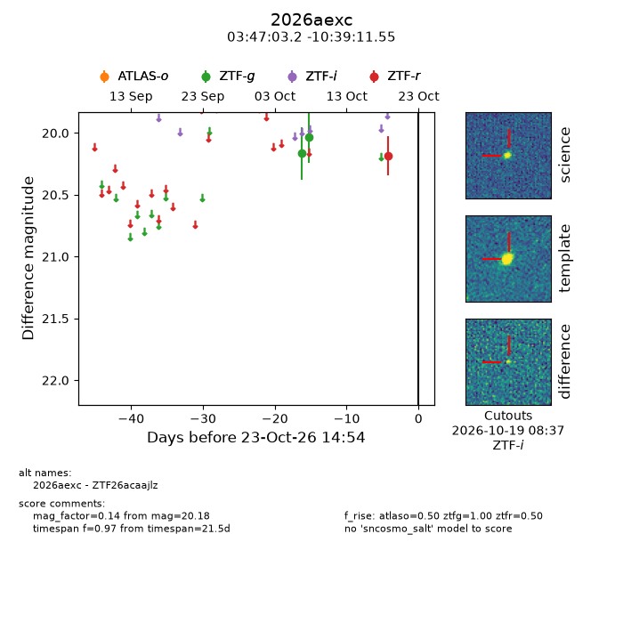
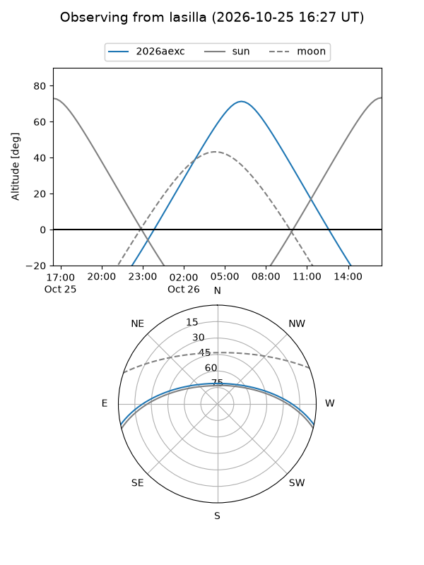
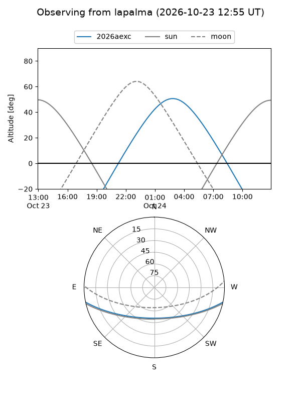
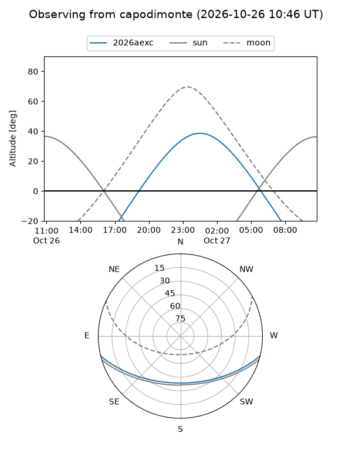
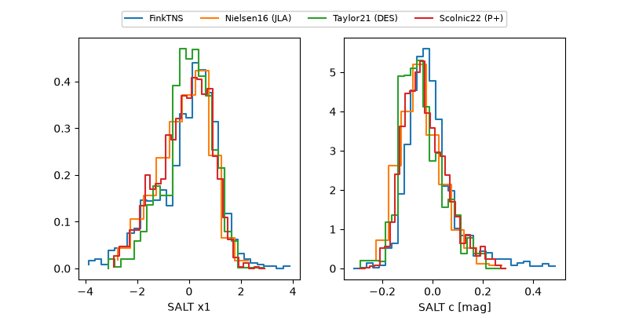

2026aexc
Target 2026aexc at 2026-10-23 14:56
Aliases and brokers:
FINK-ZTF: ztf.fink-portal.org/ZTF26acaajlz
Lasair-ZTF: lasair-ztf.lsst.ac.uk/objects/ZTF26acaajlz
ALeRCE-ZTF: alerce.online/object/ZTF26acaajlz
YSE-PZ: ziggy.ucolick.org/yse/transient_detail/2026aexc
TNS name: wis-tns.org/object/2026aexc
Direct TNS query: direct search
alt names
ZTF26acaajlz (ztf,fink_ztf)
2026aexc (tns,yse)
Coordinates:
equatorial (ra, dec) = 56.7634,-10.65321
equatorial (HMS+DMS) = 03:47:03.22,-10:39:11.55
galactic (l, b) = (199.8512,-45.60076)
Flags:
peak dt:
Photometry:
last atlaso=nan, ztfg=20.03, ztfr=20.18
1 atlaso, 2 ztfg, 1 ztfr detections
Lightcurve

Visibility



Additional plots
